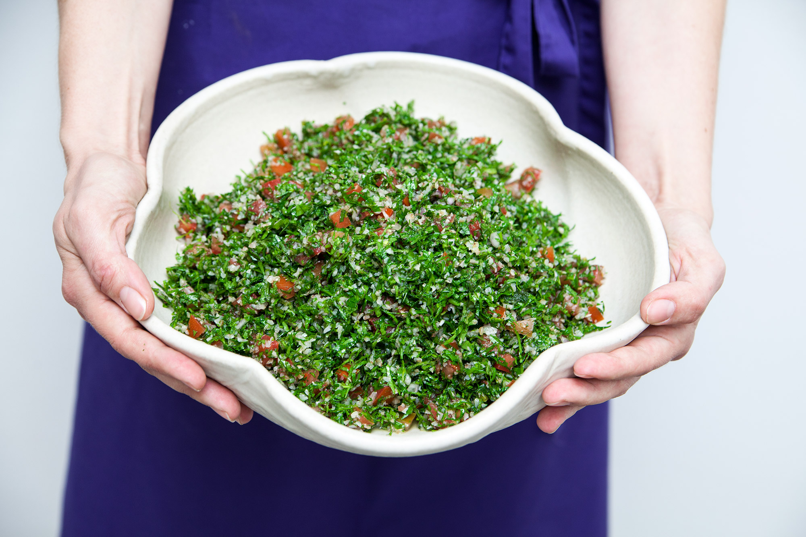

---Recipe for Tabouleh---

Ingredients
- 1/4 Cup bulgur wheat
- 4 Cups parsley (about 3 - 4 bunches)
- 1/2 Cup mint
- 4 Tomatoes
- 6 Spring onions
- 3/4 - 1 Cup strain lemon juice
- 1/2 Cup olive oil
- Garlic (Optional)
- 1 Teaspoon black pepper
- 1 Teaspoon salt (Optional)
Steps
- Wash the parsley. Run the parsley and under running water to remove any dirt or pesticides. Lightly shake the parsley to remove excess water. Set the parsley aside.
- Soak the bulgur in water for approximately 20 minutes. Add the bulgur and one cup of boiling water to a small mixing bowl.
Cover the bowl with a dish towel and let the bulgur soak until it is tender. This should take about 20 minutes
- Chop the vegetables. While your bulgur is soaking, prepare the vegetables by washing and chopping them. Finely chop the parsley, mint, and spring onions.
Dice the tomatoes. Set these ingredients aside.
- Drain the water from the bulgur. Using a strainer, drain the water from the bulgur. Press firmly on the bulgur with a paper towel to remove any excess water.
- Add in the greens. Combine the bulgur, parsley, mint, and spring onion in a large mixing bowl.
- Squeeze and strain lemon juice. Squeeze and strain about ¾ cup of lemon juice. Add the lemon juice to the tabouleh mixture.
Taste test the tabouleh to ensure that you are not adding too much lemon juice. Adjust the amount of lemon juice to your taste.
- Add olive oil, salt, and black pepper to taste. You will need approximately ½ cup olive oil, one teaspoon of salt, and one teaspoon of black pepper.
Taste the tabouleh as you add each ingredient.
- Add crushed garlic to taste. Using a garlic press, add a few cloves of fresh garlic to the tabouleh. Continue tasting the tabouleh while adding garlic.
- Add diced tomatoes. Mix in the four diced tomatoes that were chopped and set aside. Mix the tomatoes in with care to prevent them from being mashed.
- Refrigerate the tabouleh. Tabouleh tastes best if refrigerated for at least 30 minutes before serving. Cover the mixing bowl and place it in the refrigerator.
- Serve the tabouleh. Transfer the chilled tabouleh to a serving bowl or platter. Tabouleh pairs nicely with pita, hummus, or romaine lettuce leaves.
- Store the tabouleh. Put the tabouleh in an airtight container and store it in the refrigerator.